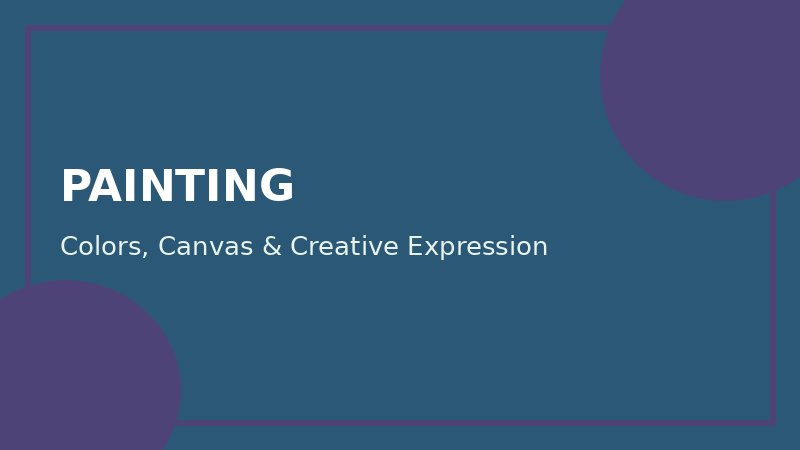

Shopping
I enjoy browsing for great fashion pieces, stationery, and thoughtful little items for friends and family.
I enjoy browsing for great fashion pieces, stationery, and thoughtful little items for friends and family.

Painting lets me unwind after busy lab sessions and express creativity through colors and nature-inspired scenes.
I love relaxing with gripping medical dramas, action thrillers, and superhero series over the weekend.
Painting (Skill Rating: 8/10): Lately I have been experimenting with blending warm sunset tones on small canvases to relax between coursework deadlines.